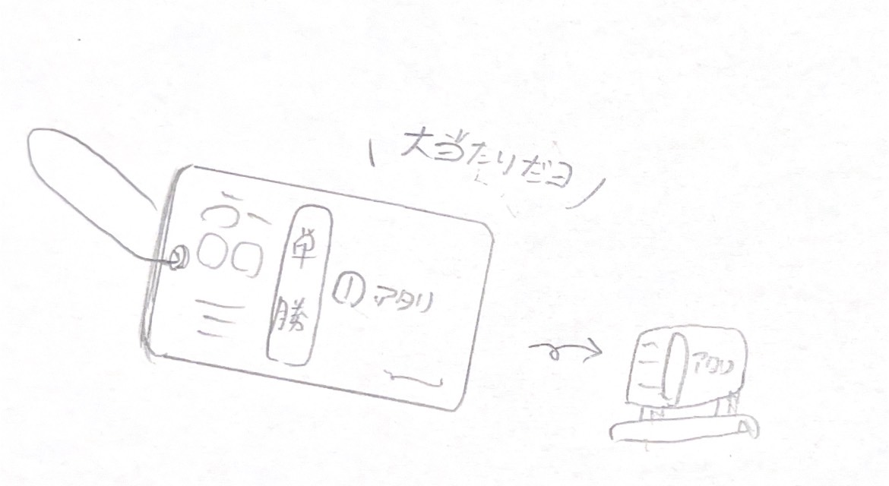
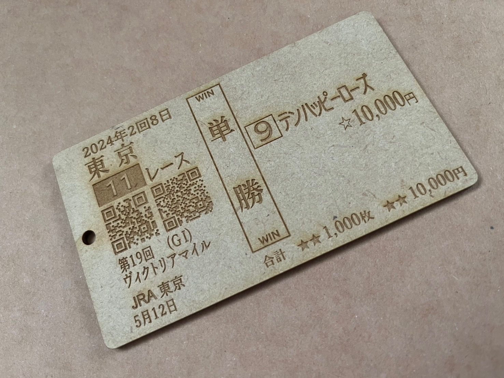
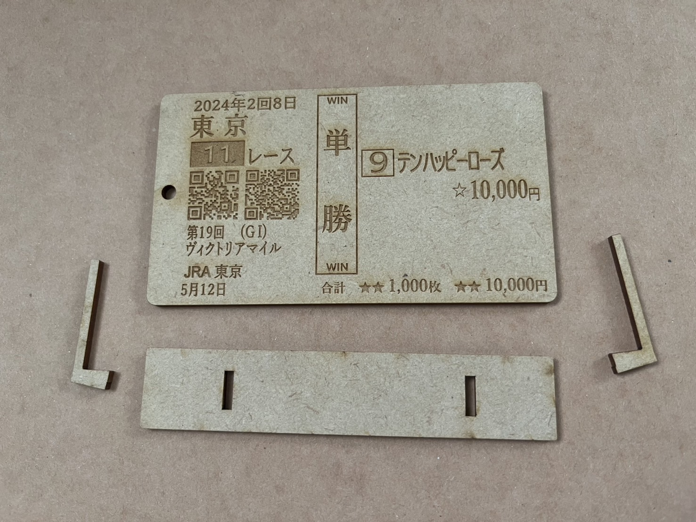
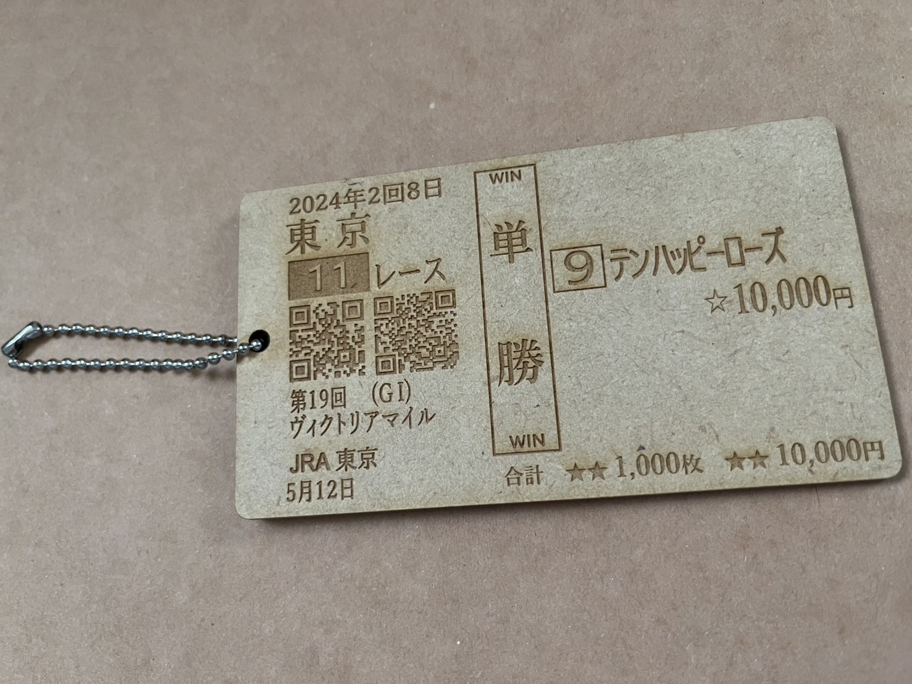
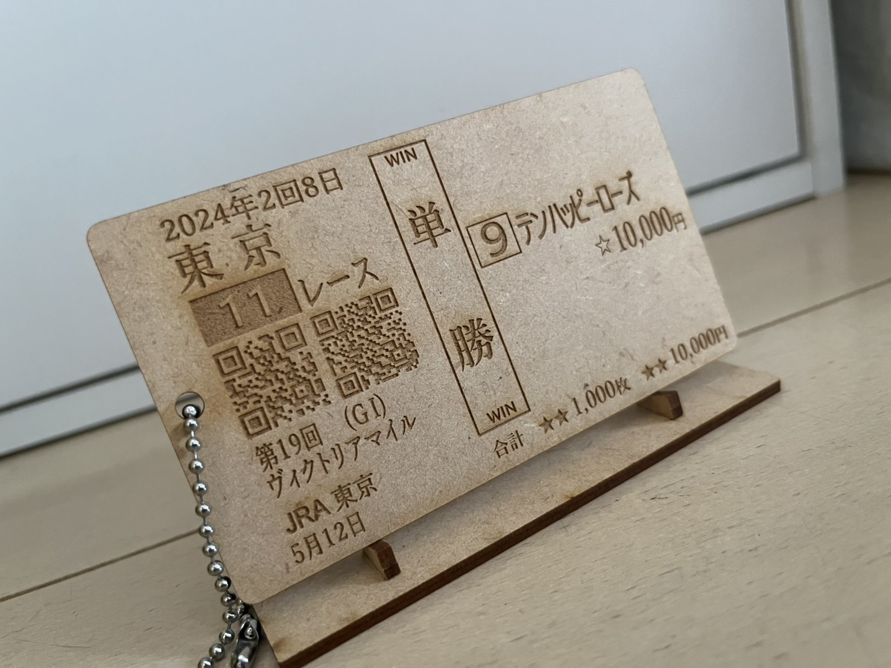
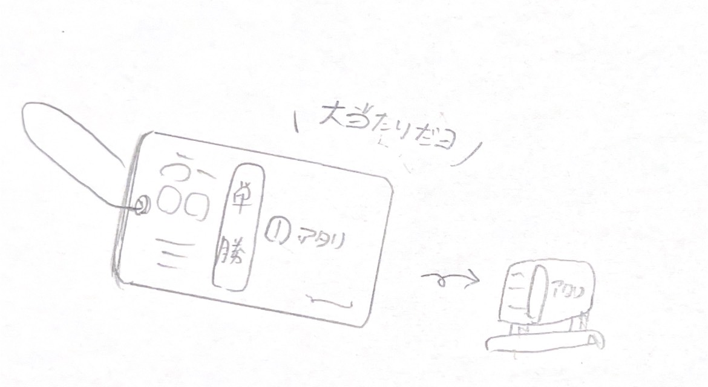
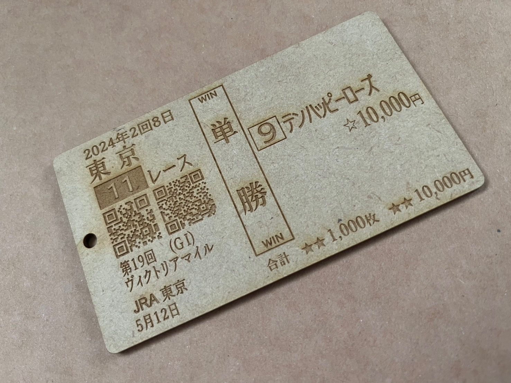
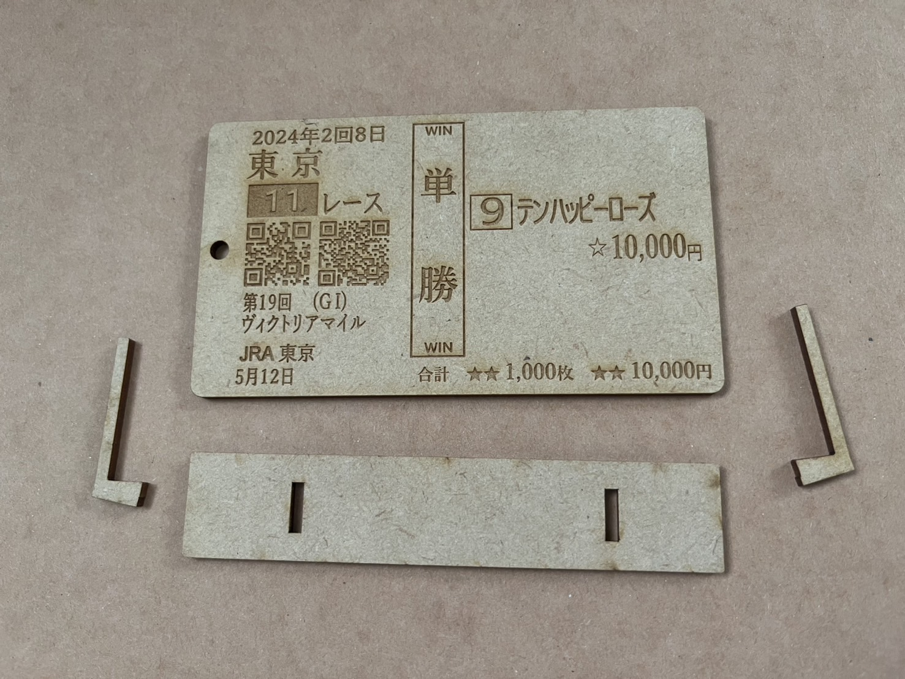
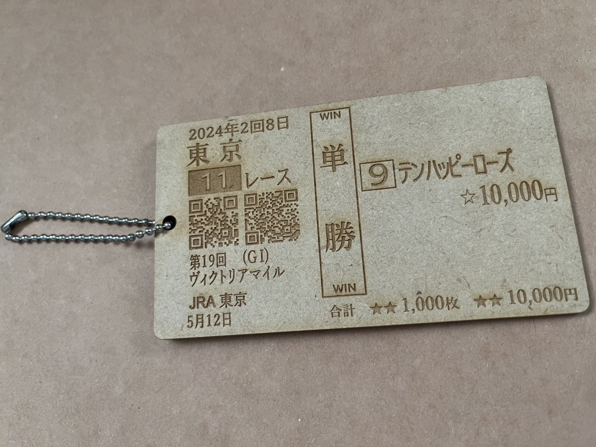
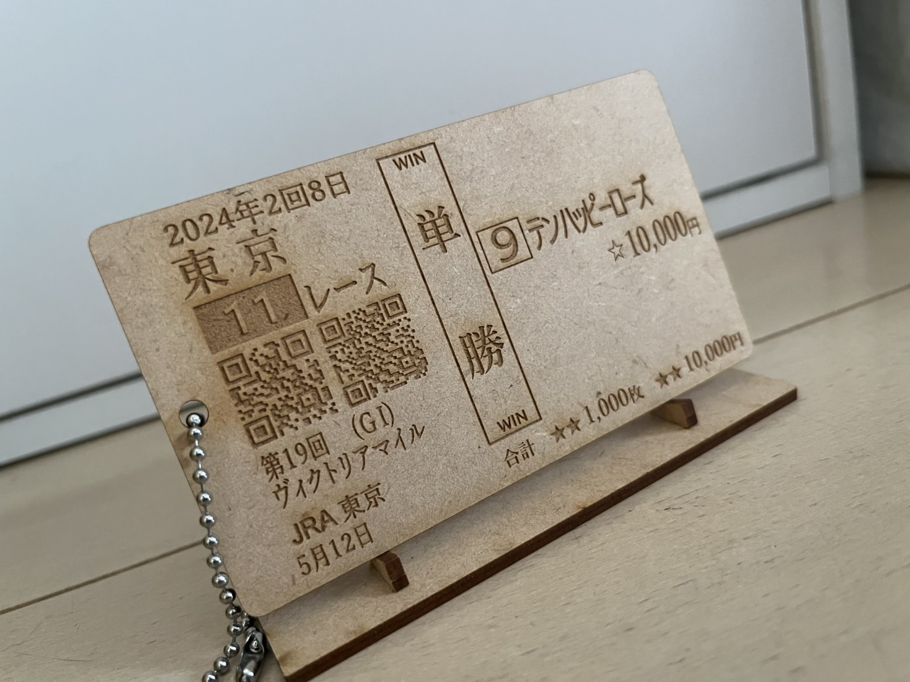

はじめに
人の心が動くのはどんなときでしょうか？
この問いには、おそらく数えきれないほどの回答があることでしょう。人は、日々さまざまな物事に心を動かされているはずです。
しかし、私は人の心が大いに動く瞬間を知っています。そうです、競馬をしていて高配当の馬券が的中したとき です。（個人の意見）
つまり、レーザーカットの技術を活用し、超大当たり馬券を作ることができれば人の心を大いに動かせるということなのです...！
ということで、とってもハートムービングなオリジナル競馬グッズ「超大当たり馬券キーホルダー」を作成してみました。
この問いには、おそらく数えきれないほどの回答があることでしょう。人は、日々さまざまな物事に心を動かされているはずです。
しかし、私は人の心が大いに動く瞬間を知っています。そうです、競馬をしていて
つまり、レーザーカットの技術を活用し、超大当たり馬券を作ることができれば人の心を大いに動かせるということなのです...！
ということで、とってもハートムービングなオリジナル競馬グッズ「超大当たり馬券キーホルダー」を作成してみました。
制作過程＆完成品
今回は高配当馬券として、つい最近の2024年ヴィクトリアマイルのテンハッピーローズを単勝でチョイスしました。
完成品をスケッチでイメージした際に台座で飾りたい欲が出てきたので、そちらも追加します。

幸い手元に馬券があった（私は買ってませんよ）ので、そちらをもとにサイズ感やバランスを調整しつつInkscapeでデザインします。
より人の心を動かすため基本はリアルに忠実ですが、プリントすることも考えてデフォルメや変更も加えていきます。QRコード部分が分かりやすいでしょうか。
 デザインの完成後はキーホルダーとしての形を整え、最後の調整などを行って完成。
デザインの完成後はキーホルダーとしての形を整え、最後の調整などを行って完成。
レーザーカットして出来上がった完成品がこちらになります。



 カットはもちろんのこと、プリントも想像以上もキレイかつ細かくできていました！
ボールチェーンをつけてキーホルダー化できるほか、台座に立てて飾っておくことも可能です。
なお実際の配当が208.6倍なので、完成品どおり10,000円買っていれば払い戻しは200万円以上 です。やばい。
競馬をやっている人には穴馬の馬券を的中させるあの快感を味わってもらえ、やってない人にも面白く思っていただける素晴らしい一品になっております。
超大当たり馬券キーホルダー、まさに（いろんな意味で）心を動かすアイテムなのではないでしょうか？
ちなみに、本物の馬券と比べてみるとこんな感じ。そっくりに作れて嬉しいです。
完成品をスケッチでイメージした際に台座で飾りたい欲が出てきたので、そちらも追加します。

幸い手元に馬券があった（私は買ってませんよ）ので、そちらをもとにサイズ感やバランスを調整しつつInkscapeでデザインします。
より人の心を動かすため基本はリアルに忠実ですが、プリントすることも考えてデフォルメや変更も加えていきます。QRコード部分が分かりやすいでしょうか。
デザインの完成後はキーホルダーとしての形を整え、最後の調整などを行って完成。レーザーカットして出来上がった完成品がこちらになります。



 カットはもちろんのこと、プリントも想像以上もキレイかつ細かくできていました！
ボールチェーンをつけてキーホルダー化できるほか、台座に立てて飾っておくことも可能です。
なお実際の配当が208.6倍なので、完成品どおり10,000円買っていれば払い戻しは
競馬をやっている人には穴馬の馬券を的中させるあの快感を味わってもらえ、やってない人にも面白く思っていただける素晴らしい一品になっております。
超大当たり馬券キーホルダー、まさに（いろんな意味で）心を動かすアイテムなのではないでしょうか？
ちなみに、本物の馬券と比べてみるとこんな感じ。そっくりに作れて嬉しいです。
データ＆ドキュメンテーション
超大当たり馬券キーホルダー（本体のみ）▼
baken_only.svg
超大当たり馬券キーホルダー（台座つき）▼
baken_set.svg）
ぜひテキストを編集して自分の好きな馬券キーホルダーを作ってみてくださいませ。
baken_only.svg
{kind=link}
超大当たり馬券キーホルダー（台座つき）▼
baken_set.svg）
{kind=link}
ぜひテキストを編集して自分の好きな馬券キーホルダーを作ってみてくださいませ。
先述のとおり、今回はInkscapeを利用してデザインを作成しました。
慣れないとやや使いにくいと噂のInkscapeですが、今回のように文字と線のみを描く限りではすぐに使いこなせるようになりました。

基本的な操作はよくあるペイントソフトとほぼ同じです。画面左のアイコンからツールを選んでからデザインします。
描画したものを右クリックするとより細かな調整ができます。線や文字のサイズなどもここで変更できます。思ったより簡単でした。
ただし注意点もあります。
InkscapeとAdobe Illustratorでは標準搭載のフォントにややばらつきがあるので、ファブラボのPCに読み込ませた際に仕様が少し変わる可能性があります。
加えて、線の塗り方も少し異なる部分があるようなので、最終的な調整をファブラボでしっかり行いましょう。
また、日本語で操作方法などをまとめてあるサイトがほとんどないことにも注意してくだい。ほぼ英語版のサイトです。
こういった点を除けば、無料ソフトとして十分な機能を備えています。ぜひご検討を。
参考にさせていただいたサイト ▼
Inkscape@JP
慣れないとやや使いにくいと噂のInkscapeですが、今回のように文字と線のみを描く限りではすぐに使いこなせるようになりました。
基本的な操作はよくあるペイントソフトとほぼ同じです。画面左のアイコンからツールを選んでからデザインします。
描画したものを右クリックするとより細かな調整ができます。線や文字のサイズなどもここで変更できます。思ったより簡単でした。
ただし注意点もあります。
InkscapeとAdobe Illustratorでは標準搭載のフォントにややばらつきがあるので、ファブラボのPCに読み込ませた際に仕様が少し変わる可能性があります。
加えて、線の塗り方も少し異なる部分があるようなので、最終的な調整をファブラボでしっかり行いましょう。
また、日本語で操作方法などをまとめてあるサイトがほとんどないことにも注意してくだい。ほぼ英語版のサイトです。
こういった点を除けば、無料ソフトとして十分な機能を備えています。ぜひご検討を。
参考にさせていただいたサイト ▼
Inkscape@JP
余談
先ほど少し触れたQRコードの部分ですが、ちょっとした小ネタを仕込んであります。
本物の馬券は専用の機械が読み取るためのもので、スマートフォンなどでは読み取ることはできません。
ですが、こちらの超大当たり馬券キーホルダーでは、それぞれJRAウェブサイト（左）とnetkeibaの同レース結果ページ（右）に飛べるようにしています。
お時間のある方はぜひ読み取ってみてください。
本物の馬券は専用の機械が読み取るためのもので、スマートフォンなどでは読み取ることはできません。
ですが、こちらの超大当たり馬券キーホルダーでは、それぞれJRAウェブサイト（左）とnetkeibaの同レース結果ページ（右）に飛べるようにしています。
お時間のある方はぜひ読み取ってみてください。